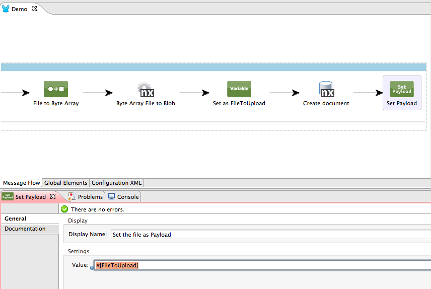

Nuxeo Platform 6.0 Release Notes
For Developers
Elasticsearch in the Platform
Elasticsearch engine and wrapping java service is embedded in Nuxeo CAP distribution, with a dedicated tab in the Admincenter for monitoring the activity. An embedded server is started by default. In production, Nuxeo Plaform is connected to an Elasticsearch cluster. Elasticsearch offers an amazing ability to scale the repository queries while being very easy to set up. The graph below compares number of requests served per second with the number of concurrent users increasing on a given same hardware. In blue dabase queries versus in red Elasticsearch queries.

MongoDB Backend
A deep refactoring of low layers happened in Nuxeo Platform so as to be able to support a non-transactionnal JSON-based storage engines for the repository, such as MongoDB. This refactoring was made so as to be able to implement other NoSQL backends in the future. MongoDB is a perfect candidate when expectations in concurrent writes and high availability are high. Any application existing on top of Nuxeo Platform can benefit form this new persistence option as it is completely transparant to the Content Management model exposed by tree_children Nuxeo Platform. More information on Mongo DB storage and how to set it up .
REST API
Rest API playground
We built a Playground so as to be able to test the REST API and learn how it works.
Content Enricher
Former Rest Providers have been renamed "Content Enricher" for more clarity. The corresponding necessary contribution was also changed. Furthermore, we added the possibility to use parameters when contributing a new content enricher.
Various content enrichers were added to the platform:
- ACL: This adds ACLs of the document to the response. It was previously doable using the @ACL web adaptor. Having a Content Enricher for this allows to get in one same call the document and its ACLs.
- Permission: This one returns the list of permissions the user has on each documents. Useful when building a client side screen, to know if an update button should be displayed.
- Thumbnail: This one adds url of the Thumbnail Picture to the response. You can use it when doing client slide applications.
- Preview: This one adds url of the preview.
- l10nsubjects, l10ncoverage: Exemples of the use of the parameterized enricher based on the VocabularyEnricher class, that returns all the labels of values of the documents that are linked to directories. Useful when you want to make client-side listings of documents and to resolve server-side the values to display (including internationaliation).
The Content Enricher documentation has been updated accordingly.
Query Endpoint
A Query endpoint has been added. It allows to execute NXQL queries (with ability to control if it hits Elasticsearch or the database) and to fetch page providers. More information on the documentation page .
Endpoint for Types and Schemas
We added a new REST API endpoint for document types and schemas. It can be useful when implementing something like a connector. See NXP-14114 for details.
ParentId Ref
parentRef id has been added to the json response.
Improved File Download with the REST API
We've worked on the Blob property JSON representation. See NXP-13616 for details.
Before:
Now:
New Versioning Header
You can now control whether a minor or major version is created when creating or updating a document via the REST API, using the new "X-Versioning-Option" header, with "MAJOR" or "MINOR" as a value.
iOS SDK
We started to provide a SDK to start building your iOS application connected to the Nuxeo Platform through the REST API. We already have some very cool features like a blob offline cache.
JavaScript SDK
The JavaScript Client SDK is fully part of the Nuxeo Platform. Two implementations are provided. One uses node.js primitives, one is based on JQuery XHR. The client exposes:
- Wrappers for resources oriented REST API (at least documents)
- Utilities for automation calls
- Utilities for other resources oriented endpoints REST calls
- Batch upload helper
- Basic and token based authentications.
Client is packaged using bower for the JQuery implementation, and NPM for the node implementation. Clients are under continuous integration using phantom.js.
Box, Mule, CMIS: great new integration capabilities
CMIS Implementation Evolutions
- ACLs are now implemented
- Renditions from the RenditionService are now exposed as CMIS renditions of kind "nuxeo:rendition", with a name that's based on Rendition name. For example "nuxeo:rendition:pdf" for the "pdf" rendition.
- ecm:pos is exposed in CMISQL, so as to handle correctly ordered folders
- Nuxeo CMIS content streams support HTTP cache and last modified headers.
Box API Implementation
The Nuxeo addon nuxeo-box-api is an implementation of the Box API on top of the Nuxeo Platform repository. It transforms the Nuxeo content repository into a Box compliant storage backend. Use cases of such an approach are:
- Light integration on continuous integration chain for your Box development
- On-premise setup of Box stored content
Don't hesitate to read our CTO Thierry Delprat's interview to get a better idea.
Here are some examples:
Folders:
looks like
Files:
looks like
Mule Connector
We wrote a connector for Mule that is based on HTTP (Automation) API.
Mule ESB is a lightweight Java-based enterprise service bus (ESB) and integration platform that allows developers to connect applications together quickly and easily, enabling them to exchange data.
Using this connector, you can build Mule Flows that will use services exposed by Nuxeo Platform.
This connector exposes:
- A predefined set of Operations (getDocument, createDocument, updateDocument, query, ...)
- A generic runOperation to allow call to any operation or chain defined on the Nuxeo server
- Some converters from Nuxeo objects (Document, Documents, Blob) to raw types (Maps, List of Maps, File ...)
We invite you to read the sample and documentation to get a good grasp on the possibilities offered by this module.

Support of Facets and Other Kind of Aggregates on Page Providers and Content Views
Page Provider now integrates aggregates support and content view leveraging such kind of page providers can be configured via Nuxeo Studio easily. That way you can build search interfaces with terms, ranges and histograms filters. Many use cases have been taken into account: support of dates, specific widgets for users, directories, documents. More information about supported aggregates in the platform and how to configure new search screen with aggregates.
JSF2, New User Actions Placeholders, Result Layouts and Other Evolutions of the UI Framework and CAP Web Application
JSF2
Content Application Platform (CAP) and all the plugins have been migrated from JSF 1.2 to JSF 2 and the latest stable release of Richfaces: 4.5. A migration tool has been implemented for helping you migrate your custom code base. That will be necessary when you plan to upgrade your Nuxeo Platform Instance to 6.0. More information can be found on JSF code migration to JSF2 .
Improvement of Content Views Configurability
You can now control the display of the slideshow, the spreadsheet and the edit columns actions at the result layout level. Even better, this area of user actions is now a category of actions. It means that it is easy to contribute new actions there. To evaluate the visibility of such an action, the current content view is made available in the filter context.
Typed Layout
Layouts now have a type, which allows to define properties that can be used to define on a per instance basis if some given features are supported. We currently use it for result layouts, with two types: listingTable and listingThumbnail
Widget Definition Alias
It is possible to define aliases for a widget definition, so as to override former widget definitions with a newer one without having to duplicate that definition. Ex: - document_listing_ajax -> table_listing - search_listing_ajax -> table_listing
Document mode with Fallback on Toggleable layouts widget
Toggleable document layout widget now handles a document mode, since modes for documents are not restricted to "create" or "edit" or "view" and can gather layouts for different rendering use cases (like the drive edit screen), and still need to use "edit" or "view" mode for render. Furthermore, a logic of fallback has been added when the given mode has not been contributed.
Dev Mode: Display of Page Structure

In Development mode, you can display the structure of your page : layouts, widgets, actions, just select the object and display its properties. This makes it a great tool for getting inspiration from the default application for your own project, or for knowing which id should be used for removing or hide conditionnaly a link, a button or any other UI object .
Multi-navigation Category of Actions
The placeholder for adding virtual navigations is now part of Nuxeo CAP. You don’t need to depend of Virtual navigation for adding elements there.
JSF State and HTTP Session Debug
We have added new debugging tools to inspect the JSF state and the HTTP session.
This module provides a WebEngine access to inspect the JSF state of a faces view. It is useful to figure out the size of the http session and the complexity of implemented view.
Custom Headers in the Webapp
A custom header has been added: "X-UA-Compatible" with the value "IE=10; IE=11" so as to better control behaviour on Internet Explorer on supported versions. The way this header has been added benefits from a new extension point that allows to contribute additionnal headers.
Select2
Select2 widgets have been improved. There are two noticable new features.
- Select2 widgets can be configured to let the user add entries to its binded directory. Take a look at this example .
- You can now provide a JavaScript function that will be in charge of choosing the id (from serialized entry's fields) that will be submitted by the widget.
Changes in Features Layout, Migration to Maven 3
The build now relies on Maven 3 (Maven 2 previously). There were some big changes in the way features are distributed. Nuxeo DM is a deprecated assembly. You shoud now start systematically from Nuxeo CAP and add addition packages. Faceted Search has been deprecated and exists as a separated package. Virtual Navigation is in a separated package. Tags support has been integrated to Nuxeo CAP. Open Social is deprecated and exits now in a separate marektplace pacakge. Social Collab addon is also deprecated. DAM package contains all the imaging-* addons, and brings Picture, Video and Sound types.
Content Automation
Parameterised Automation Chains and Other Productivity Improvements on Automation
Users can design automation chains with parameters, saving a great number of chains whose structure is repeated with only a few changes in operations parameters.
The readability of an automation chain is improved with a better visibility of arguments values.
Finally, we provide a text mode for automation chain edition, that will facilitate some refactoring, and also make it easy to transfer to support a chain definition, or to build new documentation samples.
Automation: Execution Flow Operations
The list of operations allowing to launch other chains for loops (loop on blobs, loop on documents, loop on arbitrary lists) has been cleaned up. Idea is to have on all those operations support for transaction management, so as to be able to easily design scalable and robusts automation chains.
YAML Converter for Automation Chains
YAML representation of chains is now visible in the platform. Here is an example for the validateDocument chain:
New Operations for Collections Management
We have added operations dedicated to collections management. You can use AddToCollection, RemoveFromCollection, CreateACollection and GetAllDocumentsFromCollection. Their name speak for themselves.
Authentication and Other User Management Evolutions
Token Based Authentication Management & OAuth 2.0 Support
Exploding demand of API use makes it necessary to provide easy means for developers to manage authentication of the applications they develop, let it be on JavaScript based app, iOS, Python (with Drive)… The token based authentication service, implemented initially for the requirements of Nuxeo Drive is extracted and generalized, made available to the Nuxeo Platform developers. In the same time, OAuth 2.0 support is added, so as to provide as an option a very secured way of handling the authentication process.
SCIM 1.1 Implementation
A new scim-server plugin provides a RESTFUL implementation of SCIM 1.1 interface, that allows to provision users and groups using a commonly accepted API. This API is used for instance by third party IDMs like Okta.Okta SSO
A new login-okta plugin allows to use Okta IDP for managing users and authentication.Duo Web Two Factors authentication plugin
A new duoweb-authentication plugin allows to set up a two factors authentication for Nuxeo using Duo Web online sercices.Audit Service Based on Elasticsearch
A new implementation of the audit service has been made on top of an elastic search index. This provides greater performances which was necessary when audit has millions of entries, and more power in terms of defining what fields are stored.
Various
New Download Servlet
A new download servlet is available for documents that are not bound to a specific document. This new servlet is used by the Download File operation so as to get this operation working even with big files.
UserWorkspace Improvements
It is now possible to override the behaviour of user workspace creation.
Incremental Update for Integer fields
Some document fields can now be updated at the storage level using atomic increment/decrement operations. This is needed for instance to allow concurrent delta updates of fields without losing information. A typical use case is the quotas. See http://jira.nuxeo.com/browse/NXP-15103 for more details.
Directory Low Level Access Restriction
When contributing a directory declaration, it is now possible to add READ and WRITE restrictions to specific groups.
Java 8 Support
This new release has been tested with Java 8. You can see the list of changes on NXP-13570 .
NXQL Query and Fetch
Using the queryAndFetch method you can now use COUNT, AVG, SUM, MIN and MAX in your NXQL queries. Again, this only work when using queryAndFetch . See NXP-13708 for reference.
Facilitators for Escalation Rules Configuration
Simplify frequent escalation rules use cases by providing some functions usable in the conditional expression:
- timeSinceWorkflowWasStarted()
- timeSinceTaskWasStarted()
- timeSinceDueDateIsOver()
- timeSinceRuleHasBeenFalse()
That way, the following current condition
would be replaced by:
without having to deal with adding a custom node variable etc...
Calendar Facet
We have added a calendar facet that allows to easily set Calendar objects in the repository. They themselves display events in a calendar style, with ability to bind documents to calendars and events. This feature is very useful on Case Management projects, where one wants to review cases on specific events. Thanks to this roadmap item, it is a matter of a few minutes to setup some calendars in your application! The feature is made available in the already existing nuxeo-agenda module.
Giving a Comment When following a Transition
This is something we should have done a long time ago but it's finally here. You can now pass a comment when following a transition. To do this you simply add a comment in the document's context map like this:
Business Days Management
A plugin implemented at first for a customer project has been generically re-branded as it can be useful in many situations: "Business Days Management" module allows to compute a date given a delay and the list of holidays for the year. The delay will be added to the start date without counting the week ends and those holidays. See the nuxeo-business-day-management GitHub repository , we will come up soon with a post around this topic.
Generic Video Class Converter
Thanks to this new Video converter, you can add new video conversion formats without having to write custom Java classes. A sample contribution of a new video converter would be: